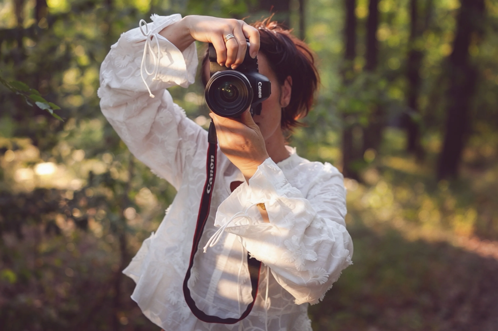

Moja Historia
Poznaj osobę stojącą za obiektywem i podróż, która ukształtowała moją sztukę.

O mnie
Nazywam się Małgorzata Błażejowska-Baklarz
Jestem twórczynią marki Obiektywnie. Od ponad dziesięciu lat spotykam ludzi z aparatem w dłoni, ale z czasem zrozumiałam, że moja praca nigdy nie polegała wyłącznie na fotografowaniu.
Polega na zatrzymywaniu historii. Na dostrzeganiu emocji, które często pojawiają się tylko na chwilę. Na tworzeniu przestrzeni, w której człowiek może poczuć się swobodnie i po prostu być sobą.
Wierzę, że najpiękniejsze fotografie nie powstają wtedy, gdy wszystko jest idealne. Powstają wtedy, gdy człowiek czuje się bezpiecznie. Dlatego nie szukam perfekcji.
Nie retuszuję życia. Nie ukrywam piegów, zmarszczek ani emocji. To właśnie one tworzą historię.
Fotografuję kobiety, rodziny, artystów, tancerzy, kameralne uroczystości i wydarzenia biznesowe. Towarzyszę również ludziom podczas spotkań jogi, masażu i chwil, w których najważniejsza jest uważność oraz obecność. Szczególne miejsce w moim sercu zajmuje portret. Bo wierzę, że oczy potrafią opowiedzieć więcej niż tysiąc słów.
Poza fotografią prowadzę warsztaty dla dzieci i dorosłych. Dzieci uczę nie tylko fotografii, ale przede wszystkim patrzenia na świat z ciekawością i zachwytem. Dorosłym pokazuję, że fotografia zaczyna się dużo wcześniej niż naciśnięcie spustu migawki. Zaczyna się od uważności.
Marzę o stworzeniu przestrzeni – miejsca, w którym fotografia spotka się ze sztuką, tańcem, rozmową i ludźmi, którzy chcą tworzyć. Wierzę, że każdy człowiek zasługuje na to, by zostać zauważonym. Jeśli czujesz, że właśnie takiego spotkania szukasz, będzie mi bardzo miło Cię poznać.
Nie obiecuję Ci idealnych zdjęć.
Obiecuję Ci prawdziwe spotkanie.